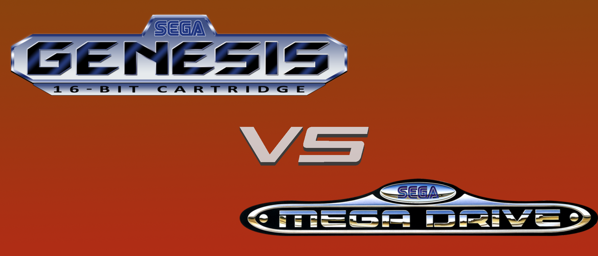
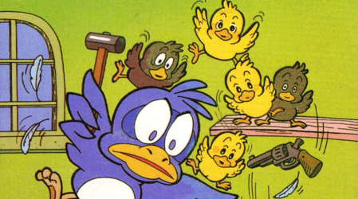
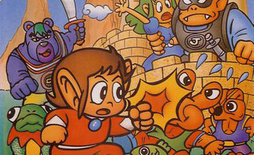
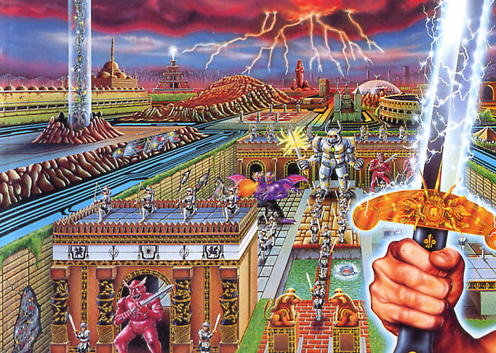

New Articles
Interview with Yu Suzuki

Famous for his work on games such as Space Harrier, OutRun, After Burner, and more, Sega Legacy has managed to take some time to talk to Yu Suzuki to discuss his time working with SEGA and his thoughts on his games in retrospective.
Genesis VS Mega Drive: The Neverending Debate

It's America VS The World! We've taken to comments from our recent visit to GamerFest 201X, along with last month's poll, and accumulated our results to discover just which came out on top -- the Genesis, a sign of a new, but short-lived beginning for SEGA, or the Mega Drive, the intended name of the console known by the rest of the world over?
Webcomics
Flicky and the Piopios

In a large, fancy mansion, it's tough to keep your chicks in a row when that mean cat, Nyannyan, and the slick lizard, Choro, are out and about, giving you all kinds of headaches. Join the bustling mama bird, Flicky, and her plucky children, the Piopios, as they try to take on the house and everyone in it.
Alex Kidd's Miracle Adventures

He's on his Sukopako Motorcycle and roaring away! Now he's on his Pedicopter and soaring through the skies! You'll never know just where that Janken-playing Kidd will go in this serial webcomic.
Gain Ground: The Circuitry Wars

The Gain Ground system, a supercomputer that hosts a simulator intended for the preservation for the concept of war, has once again gone haywire during a testing sequence. Three heroes join with many others as they hop around in a virtual timeline in hopes of reaching the system's mainframe and eliminating the cause at the source.